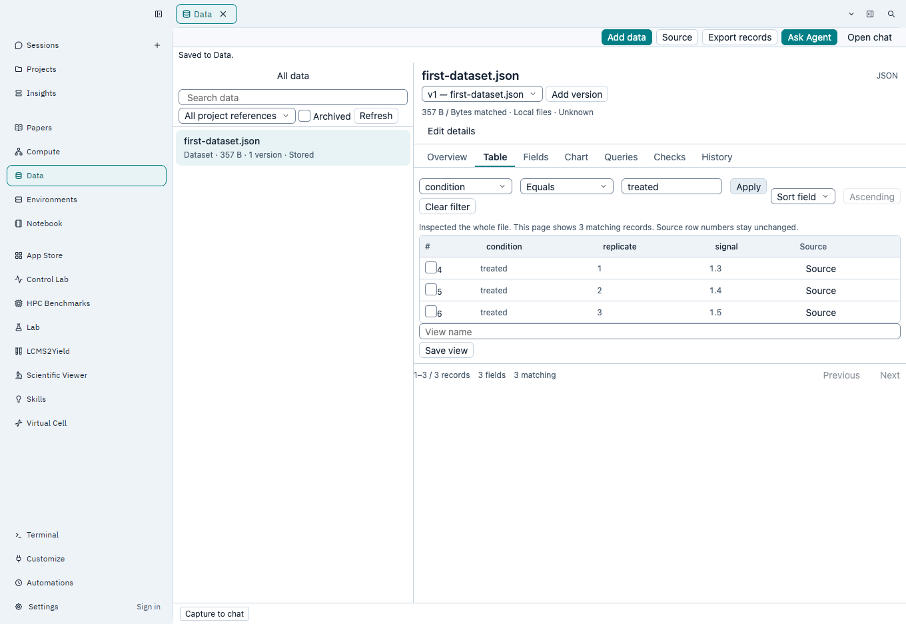
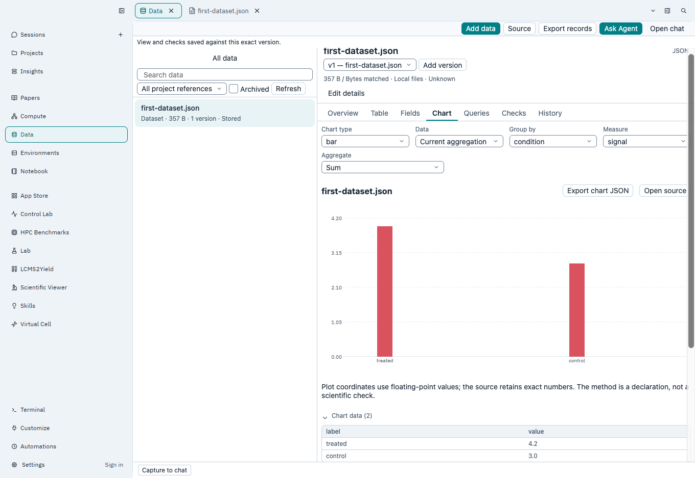

跟做一个六条记录的例子
本节实测使用 macOS Apple Silicon Electron 发布包 v0.1.0-dev.20261112。从工作台侧栏打开数据（Data），下载示例 first-dataset.json。样本是合成数据，三列分别是 condition、replicate 和 signal。如果页面显示环境未就绪，选择准备环境（Prepare environment），等到出现导入按钮。首次准备可能需要联网，之后的检视、绘图和导出在本地完成。
- 选择导入数据（Add data），选中下载的 JSON，类型保留为数据集（Dataset），再点导入（Import）。此发布包会直接打开 Table，显示 Bytes matched、6 条记录和 3 个字段。
- 在 Table 把 No filter 改为
condition，选择 Equals，输入treated后点 Apply。结果保留原始第 4–6 条的行号，signal分别为1.3、1.4、1.5。点击第 4 条右侧的 Source，会打开只读原始文件标签并选中该条记录。再点 Data 回到筛选结果。 - 在 View name 输入
Treated only并点击 Save view。界面会提示视图和检查结果已固定到这个版本。切到 Checks，检查范围仍是完整输入的 6 条记录，缺失字段、显式空值、空字符串和重复行计数均为 0。


要绘制两组，回到 Table 点 Clear filter。切到 Chart，选择 bar 和 Current aggregation，把 Group by 设为 condition、Measure 设为 signal、Aggregate 设为 Sum。展开 Chart data (2)，应看到 control 合计 3.0、treated 合计 4.2。换成 Count 时两组各为 3。


先确认数据类型与检查范围
表格检视支持 UTF-8 CSV、TSV、JSON 和 JSONL/NDJSON。文件导入上限为 10 MiB，单次检视最多 100,000 条记录和 256 个字段。表格分页显示完整文件的检查结果；未通过解析的文件会显示原因。
- CSV 和 TSV 的值默认按文本保留，适合
001这类标识符。需要用数值筛选或聚合时，打开字段对该列使用 Preview number → Apply type。先查看失败样例；带货币符号、千位分隔符或首尾空格的文本需要先处理，失败值仍保留原文。 - JSON 区分缺失字段、
null与空字符串。检查报告的缺失与转换计数按单元格统计，重复按行统计。打开问题行会暂时停用表格筛选，通过 Return to analysis 返回之前的分析。 - 给列填写单位仅影响视图标注。例如把
cm改为mm时，数值保持原样。需要换算时保留换算规则和新数据版本。
固定版本、保存视图和导出
- 要试验版本管理，把样例另存一份
first-dataset-v2.json，将{"condition":"treated","replicate":4,"signal":1.6}加为数组第 7 项。在当前条目的版本选择框旁点击 Add version，导入新文件。在 Table 应看到 v2 的 7 条记录。从资料库重新执行 Add data 会创建新条目，即使文件名相同。 - 回到 Overview → Saved views 打开
Treated only，应恢复 v1 — first-dataset.json 和原来的 3 条匹配记录。重启工作台后实测仍可打开同一个视图，再次检视会重新核对原始内容。 - 视图旁的 Export reference 会下载 JSON，包含 v1 的 SHA-256、
condition = treated筛选和针对 6 条原始记录的完整检查报告。请把原文件或可访问的来源随引用一起交接。可用 Export records 导出当前数据子集，用 Export chart JSON 导出图表。
报告和导出保留来源位置与处理配置。Data 里的项目引用是归类字段，访问权限由实际文件或服务管理。需要建立研究项目的材料索引时，见研究项目。
数据打不开时怎么处理
- 图表只有 treated。实测保留筛选时，图表只包含处理组。回到 Table 点 Clear filter，确认显示 6 行且没有勾选行，再回图表。
- 缺失或已变化。记录仍可查。恢复与登记摘要一致的原始文件，或显式添加新版本并建立新视图。
- 数字筛选没有预期结果。先查字段解释和转换失败，再查筛选范围。精确的数值和原始文本分别保留。
- 模型文件没有表格。Data 记录文件来源和版本。模型权重的加载和推理需要相应执行环境与方法。
- 归档后磁盘空间未减少。归档将条目移到已归档，仍保留版本和视图，并可恢复。